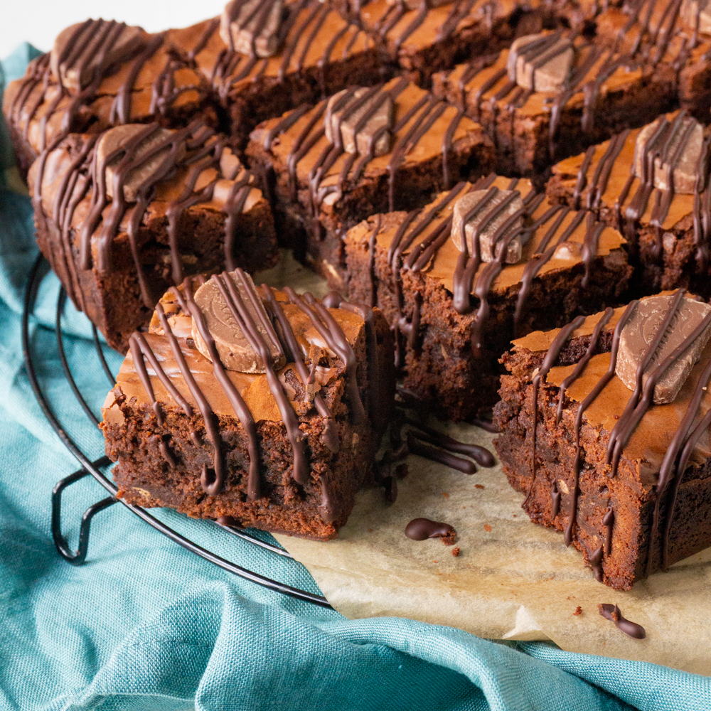

Chocolate Brownies

Chocolate and orange, a flavour pairing made in heaven. These indulgent and criminally
chocolate filled brownies are the perfect way too enjoy the holiday season's favourite flavours!
Prep Time: 25 mins
Bake Time: 30 mins
Total Time: 55 mins
Bake Time: 30 mins
Total Time: 55 mins
Servings: 12 people
Equipments: 23x23cm baking tin and stand or hand mixer
Ingredients:
- 200g dark chocolate ( roughly chopped)
- 100g terry’s chocolate orange (roughly chopped)
- 200g unsalted butter
- 4 large eggs
- 300g caster sugar
- 100g plain flour
- 25g cocoa powder
- 1 tsp cinnamon
- Zest of 1 orange
- 300g terry orange (chopped)
- 1 tbsp orange flavoring
Directions:
- Preheat an oven to 180c/160c fan/gas mark 4 and line a 23x23 cm baking tray with parchment paper
- Add butter, dark chocolate and terry's chocolate orange (100g) to a heat proof bowl and place on top of a pan with 1 cm of simmering water. Melt the ingredients together, stirring until the chocolate and butter melt and combine, take the bowl of the heat and leave to cool
- Whisk the eggs and sugar together using an electric hand whisk until pale and fluffy, about 5 minutes
- You can tell when it's done by lifting up your whisk from the batter and seeing a ribbon of the mixture sitting on top of the batter for few seconds before disappearing into your mix.
- Carefully stir the melted butter and chocolate into the egg mixture.
- Then sift flour, cocoa powder and cinnamon into the egg and chocolate mixture, and fold it in until just combined.
- Gently fold in the chopped chocolate orange, orange zest and orange flavoring into the batter.
- Pour brownie batter into the lined baking tray.
- Place in your preheated oven for 45- 50 minutes, until cooked then leave to cool and cut into squares.
Tips:
- Brownies are done when they don’t wobble and a toothpick is inserted and comes out mostly clean.
- When melting chocolate and butter make sure to keep an eye on it and stir every 2 minutes to prevent chocolate burning.
- For a more elevated look, melt some extra dark chocolate and drizzle it over the cut brownies with and extra slice of Terry's Chocolate Orange.